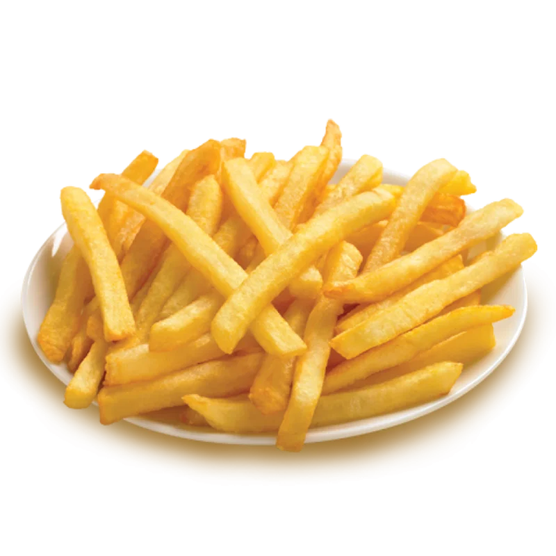

Khoai tây chiên
Về Trang chủ

Mô tả: Khoai tây chiên
Nguyên liệu:
- Khoai tây: 3 củ
- Muối
- Dầu ăn
- Tương cà hoặc tương ớt
Các bước thực hiện
- Gọt khoai tây thành từng thanh. Ngâm ngay vào muối loãng 15 phút.
- Luộc sơ với nước sôi trong 3 phút rồi vớt ra để ráo.
- Chiên ngập dầu lần 1 đến khi chín nhẹ.
- Trước khi ăn chiên lại lần 2 ở lửa lớn trong 2 phút.